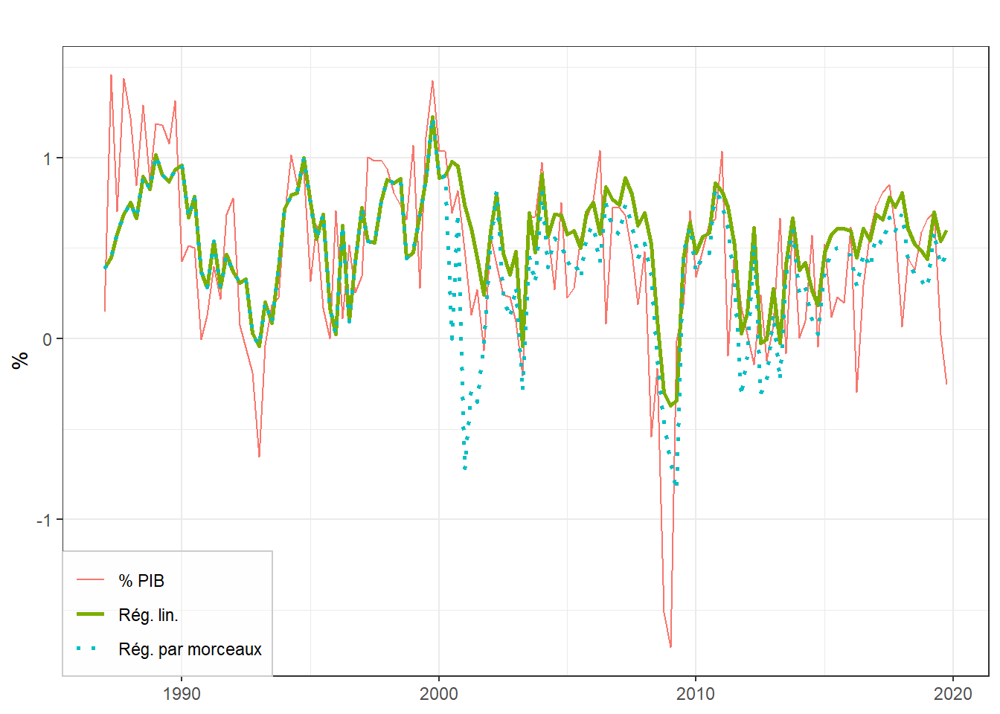
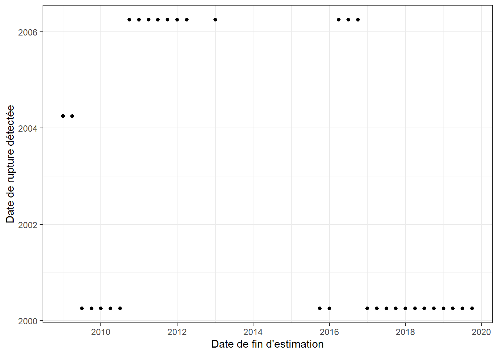
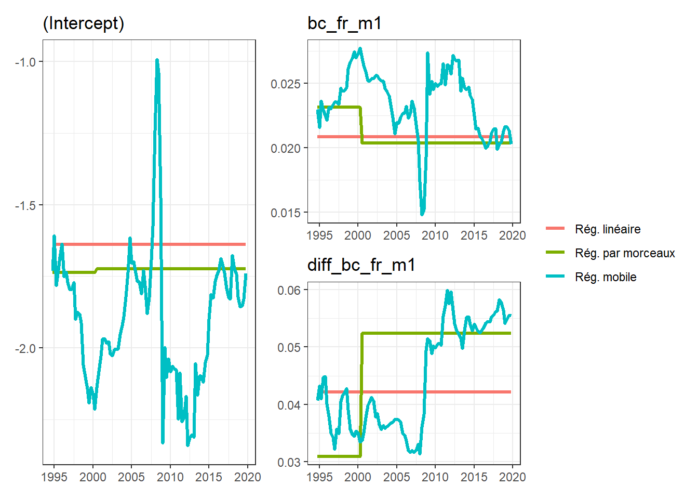
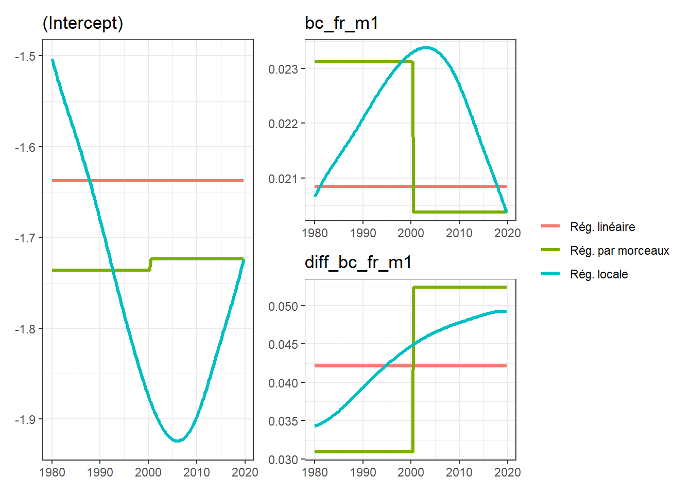
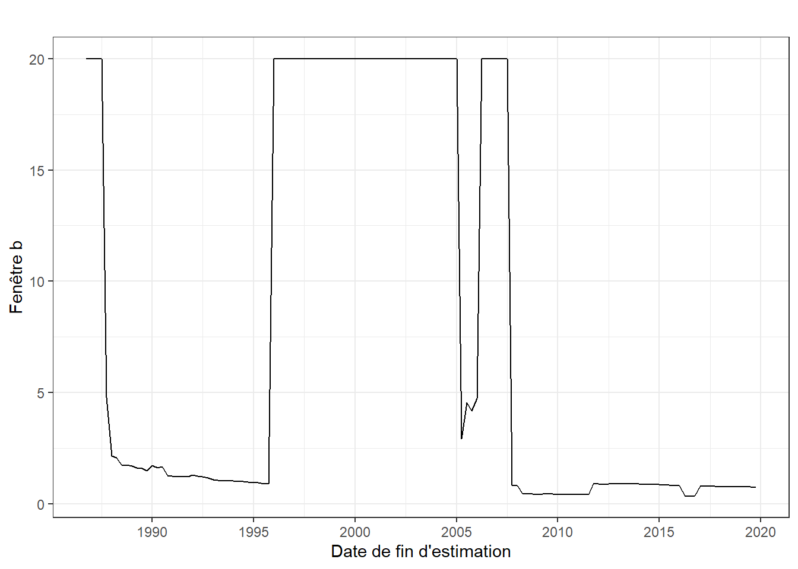
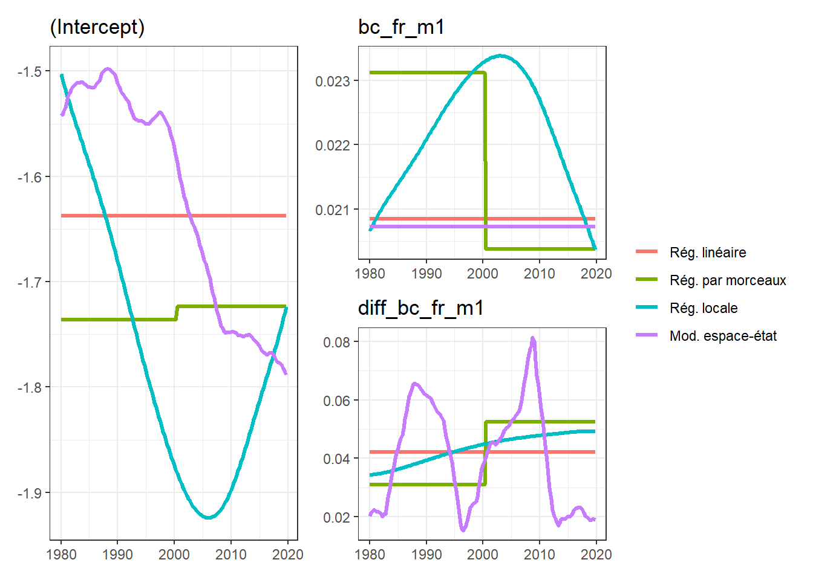

Cette étude décrit trois méthodes d’estimation de modèles de régression linéaire avec des coefficients variant dans le temps : régression par morceaux, régression locale et modélisation espace-état. Elle détaille également leur implémentation sous R grâce au package tvCoef. À travers une analyse comparative sur une trentaine de modèles de prévision trimestrielle, nous démontrons que l’utilisation de ces méthodes, notamment la modélisation espace-état, réduit les erreurs de prévision lorsque des ruptures sont présentes dans les coefficients. Par ailleurs, même lorsque les tests classiques concluent à la constance des coefficients, la modélisation espace-état peut permettre de réduire les erreurs de prévision. Cependant, les incertitudes liées à l’estimation de certains hyperparamètres peuvent augmenter les erreurs de prévision en temps réel, en particulier pour la régression locale. Ainsi, une analyse économique des paramètres estimés demeure essentielle.
Mots clés : séries temporelles, prévisions, séries longues.
Abstract
This study describes three methods for estimating linear regression models with time-varying coefficients: piecewise regression, local regression, and state-space modeling. It also details their implementation in R using the tvCoef package. Through a comparative analysis of around thirty quarterly forecasting models, we demonstrate that the use of these methods, especially state-space modeling, reduces forecast errors when breakpoints are present in the coefficients. Moreover, even when traditional tests conclude stability of coefficients, state-space modeling can still improve forecasts. However, uncertainties related to estimating certain hyperparameters can increase real-time forecast errors, especially for local regression. Thus, an economic analysis of estimated parameters remains essential.
Keywords: time series, forecast, long time series.
JEL Classification: C22, C53.
1 Introduction
Dans la statistique publique, de nombreux modèles de prévision s’appuient sur des régressions linéaires. Par exemple, les producteurs de séries désaisonnalisées appliquent des modèles RegARIMA pour la correction des effets de calendrier et les comptes. Pour la prévision des grands agrégats macroéconomiques, l’Insee (e.g., Glotain et Quartier-la-Tente 2015) et la Banque de France (e.g., Barhoumi et al. 2008) utilisent notamment des modèles de régression linéaire pour prévoir la croissance et le modèle macroéconomique Mésange (Bardaji et al. 2017) s’appuie sur des modèles à correction d’erreur pour modéliser les comportements macroéconomiques. Ces méthodes fournissent généralement de bons résultats et ont l’avantage d’être facilement interprétables. Cependant, ils supposent que les relations entre les variables (i.e, les coefficients estimés) sont fixes dans le temps : cette hypothèse peut avoir du sens sur courte période mais n’est généralement plus vérifiée lorsque les modèles sont estimés sur longue période, ce qui conduit à des modèles sous-optimaux.
Pour palier à ce problème, une solution simple consiste à utiliser moins de données pour estimer les modèles. Par exemple, le guide des bonnes pratiques sur l’ajustement saisonnier (Eurostat 2015) recommandent de ne pas désaisonnaliser des séries de plus de 20 ans. Toutefois, cela conduit à perdre l’historique des données et l’information que l’on peut en tirer et ne résout pas le problème lorsque la rupture est récente. Par ailleurs, comme montré par Pham et Quartier-la-Tente (2018) pour la désaisonnalisation des séries d’indice de production industrielle, lorsqu’il faut analyser les modèles sur l’ensemble de la période (par exemple dans le cadre de la correction des jours ouvrables), il est nécessaire de mettre en place des méthodes de chaînage afin de prendre en compte la rupture introduite par l’utilisation de plusieurs modèles. Ainsi, dans certains cas il peut être préférable d’utiliser des modèles qui prennent directement en compte les ruptures.
L’objectif de cette étude est d’étudier différentes méthodes d’estimation de coefficients variant dans le temps dans le cadre de la prévision conjoncturelle. Cela permet d’avoir des modèles qui ont l’avantage d’être plus facilement interprétables que des méthodes de machine learning, puisqu’ils s’appuient sur des modèles de régression linéaire. Ces méthodes se regroupent en trois catégories : les modèles de régression par morceaux, les régressions locales et les modèles espace-état. La première suppose l’existence d’une rupture brutale sur les coefficients à une certaine date ; les deux autres supposent que les coefficients évoluent progressivement sans le temps sans existence de rupture brutale. Pour simplifier l’implémentation de ces méthodes, ainsi que leur comparaison, le package R tvCoef (https://github.com/InseeFrLab/tvCoef) a également été développé lors de cette étude. Cette étude est entièrement reproductible et tous les codes utilisés sont disponibles sous https://github.com/InseeFrLab/DT-tvcoef.
Après une description de deux tests permettant vérifier si les coefficients sont fixes dans le temps (section 2), nous décrivons trois méthodes pour estimer des coefficients variant dans le temps et montrons comment les implémenter à partir d’un modèle de prévision de la croissance du PIB français (section 3). Enfin, nous comparons les qualités prédictives des différentes méthodes sur une trentaine de modèles de prévision trimestrielle (section 4). Nous montrons que, lorsque l’hypothèse de constance des coefficients n’est pas vérifiée, l’utilisation de ces modèles (notamment la modélisation espace-état) permet de réduire les erreurs de prévision. Par ailleurs, même lorsque les tests classiques concluent à la constance des coefficients, la modélisation espace-état peut permettre de réduire les erreurs de prévision.
2 Modélisation générale et tests
Dans cet article, nous nous placerons dans le cadre de la régression linéaire avec des variables à une dimension. À chaque date \(t\), la variable \(y_t\) (e.g., taux de croissance du PIB) est expliquée par une combinaison linéaire de \(p\) variables explicatives, \(x_{0,t},\dots,x_{p,t}\) (soldes d’opinion, indices de production industrielle, indicatrices, etc.) : \[
y_t=\alpha_{0}+\alpha_{1} x_{1,t}+\dots+\alpha_{p} x_{p,t} +\varepsilon_t
\] où \(\varepsilon_t\) représente l’erreur d’approximation. En notant \({\bf X}_t=\begin{pmatrix}1 & x_{1,t} &\cdots & x_{p,t} \end{pmatrix}\) et \({\bf \alpha}=\transp{\begin{pmatrix}\alpha_0 & \alpha_1 &\cdots & \alpha_p \end{pmatrix}}\), cela s’écrit matriciellement : \[
y_t={\bf X_t} \bf\alpha +\varepsilon_t.
\]
Dans le cadre de la régression linéaire, les coefficients \(\bf\alpha\) sont supposés constants dans le temps et estimés en utilisant l’ensemble des données. Cela suppose donc que la relation économique entre les différentes variables est stable dans le temps. Même si cette hypothèse est généralement vraie sur le court-terme, elle peut être invalidée sur le long-terme du fait de changements structurels (mesures économiques, crises, changement de nomenclature, etc.) L’objectif de cet article est d’étudier différent modèles permettant de relâcher cette hypothèse de constance des coefficients. Le modèle général s’écrit donc : \[
y_t={\bf X_t} \bf\alpha_t +\varepsilon_t.
\] Pour faciliter l’utilisation des modèles ici présentés, le package tvCoef(de Rosamel et Quartier-la-Tente 2024) a été développé pour cette étude.
Les différentes méthodes seront illustrées à travers l’exemple de la prévision du taux de croissance trimestriel du PIB à partir du climat des affaires France publié par l’Insee1. Ces séries sont disponibles sous dans la base de donnée tvCoef::gdp :
growth_gdp correspond au taux de croissance trimestriel du PIB ;
bc_fr_m1 correspond au climat des affaires au premier mois de chaque trimestre (la valeur de 2000T1 correspond à la valeur de janvier 2000, celle de 2000T2 à celle d’avril 2000, etc.) ;
diff_bc_fr_m1 correspond à la différenciation trimestrielle de la variable précédente (la valeur de 2000T1 correspond à la différence du climat des affaires entre de janvier 2000 et octobre 1999).
Le modèle s’écrit donc : \[
\% PIB_t=\alpha_0 + \alpha_1\times climat\_fr_t^{m_1} + \alpha_2\times \Delta climat\_fr_t^{m_1}+\varepsilon_t.
\]
Il est estimé en utilisant les données entre les années 1980 et 2019. Sous , ce modèle peut être estimé en utilisant la fonction stats::lm(). Toutefois, nous recommandons d’utiliser le package dynlm(Zeileis 2019) qui offre une plus grande flexibilité dans la définition des modèles et de conserver le format série temporelle dans les fonctions de tvCoef.
library(tvCoef)library(dynlm)data_gdp <-window(gdp, start =1980, end =c(2019, 4))reg_lin <-dynlm(formula = growth_gdp ~ bc_fr_m1 + diff_bc_fr_m1,data = data_gdp)# # Equivalent à :# reg_lin <- dynlm(# formula = growth_gdp ~ bc_fr_m1 + diff(bc_fr_m1, 1),# # Date de début changée car on perd une donnée avec la différenciation# data = window(gdp, start = c(1979, 4), end = c(2019, 4))# )coefficients(reg_lin)
L’idée la plus simple pour tester s’il y a une rupture dans l’estimation des coefficients à une date \(t_1\), est d’estimer deux sous-modèles avant et après cette date : \[
\begin{cases}
\forall t \leq t_1 :\quad \% PIB_t = \alpha_0' + \alpha_1' climat\_fr_t + \alpha_2' \Delta climat\_fr_t + \varepsilon_t' \\
\forall t > t_1 :\quad \% PIB_t = \alpha_0'' + \alpha_1'' climat\_fr_t + \alpha_2'' \Delta climat\_fr_t + \varepsilon_t''
\end{cases}.
\] Il ne reste ensuite qu’à tester si les coefficients estimés entre les deux sous-périodes sont égaux : \(\alpha_0' = \alpha_0''\), \(\alpha_1' = \alpha_1''\) et \(\alpha_2' = \alpha_2''.\) L’hypothèse alternative et qu’au moins un des coefficients est différent entre les deux sous-périodes. C’est le principe du test de Chow (1960).
L’inconvénient est que cela suppose d’avoir un a priori sur la date de la rupture à tester. Pour palier à ce problème, Bai et Perron (2003) ont proposé un algorithme efficace afin de chercher la présence de ruptures multiples dans des modèles de régression linéaire. Cet algorithme a été implémenté sous dans le package strucchange(Zeileis et al. 2003). La fonction strucchange::breakpoints() permet de chercher les ruptures et la fonction strucchange::breakdates() d’extraire facilement les dates associées. Le package tvCoef implémente une méthode breakpoints.lm() afin de pouvoir directement appliquer cette fonction aux régressions linéaires estimées :
Une seule rupture est détectée au 2000T2. Un intervalle de confiance autour de la date détectée peut être calculée peut en utilisant la fonction confint() :
breakdates(confint(bp))
2.5 % breakpoints 97.5 %
1 1996 2000.25 2004.75
L’incertitude autour de la date détectée est grande ! Il y a 95 % de chance que la rupture soit comprise entre 1996T1 et 2004T4.
Cet algorithme est très simple à utiliser mais possède plusieurs inconvénients :
L’implémentation sous de l’algorithme de Bai et Perron ne permet pas de chercher des ruptures sur un sous-ensemble de variables : on ne cherche des ruptures que sur l’ensemble du modèle. Par exemple, on ne peut pas tester \(\alpha_2' = \alpha_2''\) dans le modèle : \[
\begin{cases}
\forall t \leq t_1 :\quad \% PIB_t = \alpha_0 + \alpha_1 climat\_fr_t + \alpha_2' \Delta climat\_fr_t + \varepsilon_t' \\
\forall t > t_1 :\quad \% PIB_t = \alpha_0 + \alpha_1 climat\_fr_t + \alpha_2'' \Delta climat\_fr_t + \varepsilon_t''
\end{cases}.
\] Une solution simple est d’effectuer une première régression sur l’ensemble des données afin d’estimer \(\alpha_0\) et \(\alpha_1\) et d’ensuite appliquer la procédure de Bai et Perron sur le modèle : \[
\begin{cases}
\forall t \leq t_1 :\quad (\% PIB - \hat\alpha_0-\hat \alpha_1 climat\_fr)_t = \alpha_2' \Delta climat\_fr_t + \varepsilon_t' \\
\forall t > t_1 :\quad (\% PIB - \hat\alpha_0-\hat \alpha_1 climat\_fr)_t = \alpha_2'' \Delta climat\_fr_t + \varepsilon_t''
\end{cases}.
\]
Il y a une instabilité sur le choix de la date et il suppose que la rupture est brutale à une certaine date. Si la rupture est brutale, le statisticien doit pouvoir expliquer son origine (changement de nomenclature, de champ dans les données, crise…) et a déjà un a priori sur la date de rupture. Si l’on n’a aucune information sur la présence d’une rupture, on peut raisonnablement penser que celle-ci n’est pas brutale mais que la relation entre les variables a évolué de manière progressive dans le temps.
2.2 Test de constance des coefficients
Alors que l’algorithme de Bai et Perron cherche une date spécifique où il y aurait une rupture dans les modèles, Hansen (1992a) propose une procédure permettant de tester uniquement si les coefficients sont constants ou non sans hypothèse sur la forme de la rupture (brutale ou non) et sur la date de la rupture.
En repartant de la modélisation générale de la régression linéaire : \[\begin{align*}
y_t&=\alpha_{0}x_{0,t}+\alpha_{1} x_{1,t}+\dots+\alpha_{p} x_{p,t} +\varepsilon_t \\
&= {\bf X_t} \bf\alpha +\varepsilon_t\\
\E{\varepsilon_t|x_t}&=0 \text{ (exogénéité stricte)} \\
\E{\varepsilon_t^2}&=\sigma_t^2\text{ et } \underset{n\to\infty}{\lim}\frac{1}{n}\sum_{t=1}^n\sigma_t^2=\sigma.
\end{align*}\] On suppose également que toutes les variables sont faiblement dépendantes (cas général de la régression linéaire). Les variables ne doivent donc pas contenir de tendance déterministe ou stochastique (comme des racines unitaires).
Le test consiste à tester si l’ensemble des paramètres \((\alpha,\sigma^2)\) sont constants. L’hypothèse alternative est qu’au moins un paramètre suit une martingale.
Notons \({\hat \varepsilon}_t =y_t- {\bf X_t} \hat{\bf\alpha}\) et \[
f_{i,t} = \begin{cases}
x_{i,t}\hat \varepsilon_t &\text{ si }i\leq p\\
\hat \varepsilon_t^2 - \hat \sigma^2&\text{ si }i=p+1
\end{cases}
\text{ et }S_{i,t} = \sum_{j=1}^tf_{i,j}\qquad(\text{N.B : }S_{i,n}=0)
\] D’après les conditions de premier ordre \(S_{i,n}=0.\)
Le test individuel de constance du coefficient du paramètre \(i\) est : \[
L_i=\frac{1}{nV_i}\sum_{t=1}^nS_{i,t}^2\qquad
\text{avec }V_i=\sum_{t=1}^nf_{i,t}^2.
\]
Notons : \[
\bf f_t= \begin{pmatrix}
f_{1,t} \\ \vdots \\ f_{p+1,t}
\end{pmatrix} \text{ et }
\bf S_t= \begin{pmatrix}
S_{1,t} \\ \vdots \\ S_{p+1,t}
\end{pmatrix}.
\] Le test joint de constance de l’ensemble des paramètres est : \[
L_c = \frac{1}{n}
\sum_{t=1}^n\transp{\bf S_t}\bf V^{-1}\bf S_t
\text{ avec }\bf V=\sum_{t=1}^n\bf f_{t}\transp{\bf f_{t}}.
\] Il s’adapte facilement à un test de joint de constance d’un sous-ensemble de paramètres en utilisant des sous-vecteurs de \(\bf f_t\) et \(\bf S_t.\) Toutefois, si modèle contient des indicatrices alors le test joint ne pourra pas être calculé (la matrice \(\bf V\) n’est alors pas inversible).
Sous l’hypothèse nulle de constance des paramètres, les \(S_{i,t}\) devraient tendre vers 0 (à la manière d’une marche aléatoire contrainte) : les statistiques de test \(L_i\) et \(L_c\) devraient donc être petites. Sous l’hypothèse alternative d’instabilité des paramètres, la somme cumulée des \(S_{i,t}\) devrait ne pas être de moyenne nulle dans un sous-ensemble de l’échantillon et la statistique de test devrait être élevée. L’hypothèse nulle de stabilité des coefficients est donc rejetée lorsque la statistique de test est grande. Sous l’hypothèse nulle, la loi de distribution asymptotique est non standard, les valeurs critiques sont présentées dans la table 1.
Table 1- Valeurs critiques asymptotiques pour \(L_c\) en fonction du nombre de paramètres testés (1 degré de liberté pour \(L_i\)).
Ce test est implémenté dans la fonction tvCoef::hansen_test(). Par défaut, le test joint ne comprend pas le test de constance de la variance (sigma = FALSE).
hansen_test(reg_lin)
L Stat Reject at 5%
(Intercept) 1.7847 0.47 TRUE
bc_fr_m1 1.8040 0.47 TRUE
diff_bc_fr_m1 0.1883 0.47 FALSE
Variance 0.1169 0.47 FALSE
Joint Lc 2.0730 1.47 TRUE
Sur notre modèle de prévision de la croissance, le test de Hansen conclut à la non-constance des coefficients associés à la constance et au climat des affaires en niveau au seuil de 5 %. En revanche, le coefficient associé au climat des affaires en différences serait constant (au seuil de 5 %).
Le test de Hansen peut être vu comme une extension des tests de stabilité CUSUM (cumulative sum control chart) et CUSUM sur les carrés (pour le test sur la variance). Il est robuste à l’hétéroscédasticité. En appliquant les mêmes formules au modèle “transformé”, ce test est également robuste à la prise en compte de l’autocorrélation via les moindres carrés généralisés. En revanche, ce test suppose que toutes les variables sont stationnaires : il ne peut donc directement s’appliquer sur des modèles du type modèle à correction d’erreur. Dans ce cas, une loi asymptotique différente doit être utilisée2. Si le modèle est estimé en deux étapes par la méthode de Engle et Granger (1987), le test peut en revanche s’appliquer sur la seconde estimation (estimation des paramètres de court-terme).
3 Descriptions des méthodes
Si un des tests précédents conclut à la non constance des coefficients du modèle estimé c’est qu’il est mal spécifié et donc qu’il faut utiliser une modélisation alternative qui pourrait notamment provenir d’un problème de variables omises. Dans cet article, nous supposons que le problème de spécification provient des observations récentes et qu’il n’est pas nécessaire de faire un ajout de nouvelles variables explicatives pour le régler. Dans certains cas, par exemple pour prendre en compte la crise du COVID-19, il peut être utile nécessaires d’ajouter des variables supplémentaires (e.g., des indicatrices).
Trois méthodes sont étudiées dans cet article :
la régression linéaire par morceaux (section 3.1) ;
La régression par morceaux est la modélisation la plus simple : elle consiste à estimer le modèle sur un sous-ensemble des données. La modélisation est similaire à celle de la procédure de Bai et Perron puisque cette dernière donne directement les “morceaux” : entre les dates de ruptures.
Par exemple, pour le modèle de prévision de la croissance, deux régressions seraient estimés en utilisant les données avant et après 2000T2.
Deux méthodes d’estimations sont possibles :
Une régression en une étape est faite en doublant découpant les régresseurs en fonction de la date de rupture (fonction tvCoef::piece_reg()) : \[\begin{align*}
\% PIB_t &= \alpha_0\1_{t\leq 2000T2} + \alpha_1 climat\_fr_t\1_{t\leq 2000T2} + \alpha_2 \Delta climat\_fr_t\1_{t\leq 2000T2} + \\
&\phantom{=} \alpha_0'\1_{t > 2000T2} + \alpha_1' climat\_fr_t\1_{t > 2000T2} + \alpha_2' \Delta climat\_fr_t\1_{t > 2000T2} + \varepsilon_t
\end{align*}\]
Dans les deux cas les coefficients estimés sont les mêmes mais les écarts-types seront en général différents. En effet, dans la première modélisation on suppose que la variance du résidu est constante dans les deux sous-périodes alors que dans la seconde on autorise la variance à évoluer dans le temps.
Dans la majorité des cas, nous suggérons de privilégier la première modélisation car elle offre plus de flexibilité, notamment pour fixer les coefficients de certaines variables.
Dans notre exemple, les coefficients associés à la constante et au climat des affaires en niveau sont proches avant et après la rupture, ce qui est cohérent avec le résultat du test de Hansen (section 2.2) :
Cette égalité peut être testée en utilisant un test de Fisher, par exemple avec la fonction car::linearHypothesis()(Fox et Weisberg 2019). Dans notre exemple, on ne rejette pas l’hypothèse nulle d’égalité des coefficients de la constante et du climat des affaires en niveau avant et après la rupture, modèle peut donc être simplifié. Par ailleurs, on rejette l’hypothèse nulle d’égalité du coefficient associé au climat des affaires en différence : la prise en compte de la rupture est donc justifiée. Toutefois, nous conseillons de toujours considérer que la constante varie dans le temps, même lorsque que ce n’est statistiquement pas significatif : cela permet de s’assurer que le modèle ne sera pas biaisé par des résidus qui ne seraient pas de moyenne nulle.
La qualité prédictive du nouveau modèle peut s’apprécier de plusieurs façons, les plus classiques étant la minimisation du critère d’information d’Akaike (AIC et fonction AIC()) ou la minimisation des erreurs de prévisions hors échantillon (également appelées pseudo temps-réel, fonction tvCoef::oos_prev()). Pour le calcul des erreurs de prévisions hors échantillon, la méthodologie retenue consiste à calculer pour chaque date \(t\) la prévision obtenue à la date \(t+1\) en estimant le modèle à partir des observations disponibles jusqu’à la date \(t\) uniquement. Avec cette méthode, appelée le leave-one-out cross-validation, on ne s’intéresse donc qu’à la qualité de prévision à l’horizon d’un trimestre (ce qui est le cas d’utilisation pour les modèles étudiés). Par ailleurs, minimiser l’AIC est asymptotiquement équivalent à minimiser ces erreurs de prévisions hors échantillon (Anderson et Burnham 2006).
Sur notre exemple, la régression linéaire par morceaux permet de minimiser ces deux critères :
# AIC minimisé :AIC(reg_morc$model) <AIC(reg_lin)
[1] TRUE
oos_reg_morc <-oos_prev(reg_morc)oos_lm <-oos_prev(reg_lin)res <-ts.union(oos_reg_morc$residuals, oos_lm$residuals)# Les deux modèles étant équivalents avant la rupture,# on n'étudie les prévisions qu'après celle-cires <-window(res, start =2003) # Erreurs de prévisions hors échantillon minimiséesapply(res, 2, rmse)
La figure 1 montre les prévisions hors échantillon des deux modèles étudiés. Autour de la date de rupture, la régression linéaire par morceaux produit des prévisions peu réalistes : cela s’explique par le fait que très peu d’observations sont utilisées pour estimer les coefficients associés aux régresseurs après la rupture, les estimateurs sont donc peu précis (grande variance). Pour les analyses hors échantillon, il faut donc faire attention aux valeurs prédites autour de la rupture !
Scale for x is already present.
Adding another scale for x, which will replace the existing scale.
Figure 1- Prévision de la croissance du PIB à partir d’un modèle de régression linéaire et d’un modèle de régression linéaire par morceaux.

Comme indiqué dans la section 2.1, l’inconvénient de cette méthode provient du choix de la date de rupture lorsque celle-ci n’est pas imposée par l’utilisateur. La figure 2 montre les dates de la rupture détectée par la procédure de Bai et Perron en fonction de la date de fin de fin d’estimation du modèle de régression linéaire : aucune rupture n’est détectée avant 2009 ou lorsque le modèle est estimé en utilisant des données jusqu’en 2013T2-2015T3. En fonction de la date de fin d’estimation, la rupture détectée automatiquement peut tout aussi bien être en 2000 qu’en 2004 ou 2006. Même s’il est possible que cela n’ait que très peu d’effet sur les prévisions estimées en fin de période, l’interprétation faite du modèle sera vraisemblablement différente !
Figure 2- Date de rupture détectée par l’algorithme de Bai et Perron en fonction de la date de fin d’estimation du modèle.

3.2 De la régression mobile à la régression locale
La régression mobile est une des méthodes empiriques les plus simples pour savoir si les coefficients évoluent dans le temps. Celle-ci consiste à estimer des régression en utilisant un intervalle de temps fixe et à observer la courbe des coefficients estimés. En reprenant notre exemple où les données commencent en 1980, avec une fenêtre fixe de 15 ans (par exemple), cela consiste à estimer une première régression entre 1980T1 et 1994T4, une deuxième entre 1980T2 et 1995T1… et une dernière entre 2005T1 et 2019T4. Sous R cela peut par exemple s’estimer en utilisant la fonction roll::roll_lm()(Foster 2020) :
La figure 3 montre les coefficients estimés par cette régression mobile. Seule ceux estimés sur le climat des affaires en différence montrent une rupture nette. Elle s’observe à partir de 2009, lorsque plus de la moitié des points de la fenêtre (7,5 ans) sont estimés après la date de rupture détectée (2000T2).
Figure 3- Coefficients estimés par régression mobile et régression par morceaux.

Lecture : la régression mobile est estimée sur une fenêtre de 15 ans. Les coefficients estimés en 1994T4 correspondent aux coefficients estimés entre 1980T1 et 1994T4.
La régression mobile a l’avantage d’être très simple mais repose sur plusieurs paramètres qui ont ici été fixés arbitrairement dont notamment :
La longueur de la fenêtre : elle doit être suffisamment large pour avoir des bonnes estimations mais suffisamment courte afin de permettre de prendre en compte les ruptures.
La date à laquelle les coefficients sont associés. Dans la fonction roll::roll_lm() ils sont associés à la dernière date de la fenêtre : les coefficients de la date \(t\) correspondent à ceux obtenus en utilisant les données jusqu’à la date \(t.\) Ils auraient également pu être associés à la première date de la fenêtre ou encore à son milieu (coefficients de la date \(t\) estimés en utilisant autant d’observations avant et après \(t\)). Dans tous les cas une stratégie doit être adoptée afin de gérer les observations manquantes (dans notre exemple il s’agit donc d’estimer les coefficients avant 1994).
La régression locale permet, grâce à une modélisation plus poussée, de donner des solutions à ce problème. Dans ce papier nous détaillons la modélisation utilisée dans la fonction tvReg::tvLM() développée par Casas et Fernandez-Casal (2019)3. On suppose ici que les coefficients \(\bf\alpha_t\) dépendent d’une variable aléatoire \(z_t\) : \(\bf\alpha_t=\alpha(z_t).\) Par défaut \(z_t=t/T\) avec \(T\) le nombre d’observations : les coefficients dépendent donc d’une mesure normalisée du temps. On suppose que la fonction \(\alpha\) est localement constante (\(\alpha(z_t)\simeq \alpha(z)\), option par défaut) ou localement linéaire (\(\alpha(z_t)\simeq \alpha(z)+\alpha'(z)(z_t-z)\)), c’est-à-dire que pour toute date \(t\) on a pour toute date \(i\) proche de \(t\) : \(\alpha(z_i)\simeq\alpha(z_t)\) ou \(\alpha(z_i)\simeq\alpha(z_t)+\alpha'(z_t)(z_i-z_t).\) Cette approximation locale est justifiée par le théorème de Taylor.
Pour chaque date \(t\), le coefficient \(\alpha_t=\alpha(z_t)\) est obtenu par moindres carrés pondérés. Lorsque \(\alpha\) est supposé localement constant il s’agit du système : \[
\hat{\bf\alpha_t}=\hat{\alpha}(z_t)=\underset{\bf\theta_0}\argmin\sum_{i=1}^T\left[y_i-{\bf X_i}\bf\theta_0 \right]^2K_{b_t}(z_i-z_t).
\] Lorsque \(\alpha\) est supposé localement linéaire il s’agit du système : \[
(\hat{\alpha}(z_t), \hat{\alpha}'(z_t))=\underset{\bf \theta_0,\bf \theta_1}\argmin\sum_{i=1}^T\left[y_i-{\bf X_i}\bf\theta_0 - (z_i-z_t){\bf X_i}\bf\theta_1\right]^2K_{b_t}(z_i-z_t).
\] Avec \(K_{b_t}(z_i-z_t)=\frac{1}{b_t}K\left(\frac{z_i-z_t}{b_t}\right)\) et \(K(\cdot)\) une fonction de noyau. La fonction \(K\) permet de pondérer les observations : pour l’estimation du coefficient à la date \(t\) on accorde généralement plus d’importance (i.e., un poids plus important) aux observations qui sont proches de \(t\) qu’à celles qui sont éloignées de \(t.\) C’est une fonction positive, paire et intégrable telle que \(\int_{-\infty}^{+\infty}K(u) \ud u=1.\) Trois noyaux sont disponibles dans la fonction tvReg::tvLM() :
Le cubique (triweight, utilisé par défaut) : \[
K(u)=\frac{35}{32}\left(
1-
\left\lvert
u
\right\lvert^2
\right)^3\1_{[-1,1]}(u).
\]
Le noyau d’Epanechnikov (ou parabolique) : \[
K(u)=\frac{3}{4}\left(
1-
\left\lvert
u
\right\lvert^2
\right)\1_{[-1,1]}(u).
\]
Le noyau Gaussien : \[
K(u)=\frac{1}{\sqrt{2\pi}}\exp\left(-\frac{1}{2}u^2\right).
\]
Le paramètre \(b_t\) permet de calibrer la largeur de la fenêtre (i.e., le nombre de points utilisés pour chaque estimation). Il est généralement supposé constant (\(b_t=b\)).
Dans notre exemple de prévision du PIB, \(T=160\) observations sont utilisées. Avec \(z_t=t/T\) et indexant chaque observation entre 1 et \(T,\) la régression mobile sur 15 ans où l’on affecte le coefficient de la date \(t\) au milieu de la fenêtre d’estimation est donc retrouvée en utilisant le noyau uniforme \(K(u)=\1_{[-1,1]}(x)\) avec \(b_t=b=\frac{30}{160}.\) En effet, dans ce cas \(K(z_t-z_i)\ne0\) si et seulement si \(|t-i|\leq30\) : on utilise donc 30 observations (soit \(7,5\) ans) autour de \(t\) pour estimer le coefficient à la date \(t.\)
Dans tvReg, le paramètre \(b\) est par défaut obtenu en minimisant une statistique de validation croisée dans l’intervalle \(\left[\frac{5}{T},20\right].\) Lorsque \(b\) est plus grand que 1, toutes les observations sont utilisées pour l’estimation de chaque coefficient \(\bf\alpha_t.\) Plus \(b\) se rapproche de 1 plus on se rapproche du cas de la régression linéaire puisque dans ce cas les poids donnés par \(K\) tendent à être constants pour toutes les observations. En effet, dans ce cas, pour \(T=160,\)\(\frac{\max_u K(u)}{\min_u K(u)}\) est compris entre \(1,001\) et \(1,008\) pour les noyaux cubiques, paraboliques et gaussiens.
Reprenons notre exemple de prévision du PIB avec une détection automatique de la fenêtre.
La fenêtre estimée par défaut est de 0,75, c’est-à-dire que pour estimer le coefficient à la date \(t\) on utilise au plus 30 ans avant et après \(t\) : on utilise tous les points dans la majorité des cas. Cela explique le caractère très lisse des coefficients (figure 4). Avec ce paramètre pour la fenêtre, les ruptures brutales sont donc difficiles à prendre en compte.
Figure 4- Coefficients estimés par régression linéaire, régression par morceaux et régression locale (avec \(b=0,74\)).

Un des inconvénients de méthode de sélection automatique de la fenêtre est que la statistique de validation croisée est un critère peu discriminant (voir Clive Loader (1999)) : il peut y avoir très peu de différences entre différentes valeurs de la fenêtre alors que celle-ci a un impact fort sur l’interprétation du modèle ! Cela a également pour effet que la méthode est peu stable dans le temps (figure 5), ce qui augmente les sources de révisions des simulations hors échantillon, calculables en utilisant la fonction oos_prev() :
Scale for x is already present.
Adding another scale for x, which will replace the existing scale.
Figure 5- Fenêtre \(b\) détectée automatiquement en fonction de la date de fin d’estimation du modèle.

Pour l’estimation hors échantillon, la méthode utilisée est l’utilisation d’une fonction de noyau tronquée : plus de points dans le passé que dans le futur sont utilisés pour estimer les derniers coefficients. C’est donc également une source de révision au fur et à mesure que des nouveaux points seront connus. Même si des méthodes optimales existent pour minimiser les erreurs d’estimation des coefficients hors échantillon (voir par exemple Feng et Schäfer (2021)), cela devrait ici avoir peu d’impact car un modèle très simple est ici utilisé pour estimer les coefficients (approximation de la fonction \(\alpha\) par une constante).
Un autre inconvénient de ces méthodes est que tous les coefficients varient dans la temps alors que dans certains cas on peut supposer la relation constante. Si l’on souhaite fixer certains coefficients, on peut procéder comme dans la section 2.1 en faisant une régression linéaire, pour estimer les coefficients fixes, suivie d’une régression mobile.
3.3 Modélisation espace-état
La modélisation espace-état est une méthodologie générale permettant de traiter un grand nombre de problèmes de séries temporelles. Dans cette approche, on suppose que tout modèle est déterminé par une série de vecteurs non observés \(\alpha_1,\dots,\alpha_n\) associés aux observations \(y_1,\dots,y_n\), la relation entre \(\alpha_t\) et \(y_t\) étant spécifiée par le modèle espace-état. Ces modèles sont largement décrits dans la littérature, notamment par Durbin et Koopman (2012). Dans cet article, nous nous placerons dans un cadre simplifié des modèles linéaires gaussiens appliqués aux régressions linéaires. Les modèles sont déterminés par un ensemble de deux équations : \[
\begin{cases}
y_t={\bf X_t}\bf\alpha_t+\varepsilon_t,\quad&\varepsilon_t\sim\mathcal N(0,\sigma^2)\\
\bf\alpha_{t+1}=\bf\alpha_t+\bf\eta_t,\quad&\bf\eta_t\sim\mathcal N(\bf 0,\bf\Sigma)
\end{cases},\text{ avec }\eta_t\text{ et }\varepsilon_t\text{ indépendants.}
\] La première équation est l’équation d’observation (observation equation), la seconde l’équation d’état (state equation) et \(\bf\alpha_t\) le vecteur d’états (state vector).
Dans cette étude, la matrice de variance-covariance \(\bf\Sigma\) est supposée diagonale : la dynamique d’évolution des coefficients d’une variable est donc indépendante de la dynamique d’évolution des autres variables. Lorsque des contraintes entre les différents coefficients existent, des spécifications différentes de la matrice de variance-covariance \(\bf\Sigma\) peuvent être faites : c’est par exemple ce qui a été fait par Zhang et Poskitt (2006) pour estimer des coefficients jours ouvrables variant dans le temps. On retrouve le cas de la régression linéaire lorsque \(\bf\Sigma=\bf 0\) puisque dans ce cas tous les \(\alpha_t\) sont égaux.
Ces modèles sont implémentés dans la fonction tvCoef::ssm_lm() qui prend en entrée un modèle de régression linéaire. L’implémentation est basée sur le package rjd3sts(Palate 2023) qui permet d’implémenter très facilement les modèles espaces-état sans devoir écrire explicitement le modèle. Par défaut les variances du vecteur d’états (\(\bf \Sigma\)) ne sont pas estimés et fixés à 0 : on retrouve donc les coefficients estimés par régression linéaire.
ssm <-ssm_lm(reg_lin)ssm
Mean of time-varying estimated coefficients (smoothing):
(Intercept) bc_fr_m1 diff_bc_fr_m1 noise
-1.6377 0.0208 0.0422 0.0000
L’estimation des hyperparamètres (variances des bruits blancs) est faite par maximum de vraisemblance différentes méthodes existent pour initialiser les modèles (calculer \(\bf \alpha_1\)). Pour plus de détails voir par exemple Durbin et Koopman (2012). Le filtre de Kalman permet ensuite de calculer tous les coefficients. Parmi les paramètres calculés, les deux principaux sont :
Les états lissés (smoothed states) \(\E{\alpha_t|y_1,\dots,y_n}\) : il s’agit de l’estimation des états (\(\bf\alpha_t\)) en utilisant toute l’information disponible. Dans le cadre de la régression linéaire, les états lissés sont donc constants sur toutes les dates et correspondent aux coefficients estimés en utilisant l’ensemble des données disponibles :
Les états filtrés (filtered states) \(\E{\alpha_t|y_1,\dots,y_{t-1}}\) : il s’agit de l’estimation des états (\(\bf\alpha_t\)) en utilisant l’information disponible jusqu’à la date précédente. Dans le cadre de la régression linéaire, cela correspond aux coefficients estimés hors échantillon : la valeur des états filtrés en 2010T2 correspond aux coefficients estimés en utilisant les données jusqu’au 2010T1. Ils permettent donc d’avoir une estimation des prévisions hors échantillon du modèle.
round(window(ssm$filtering_states, start =c(2010, 2), end =c(2010, 2)), 6)
Lorsque les variances sont estimées, les états filtrés ne correspondent pas à exactement à des estimations hors échantillon car les hyperparamètres sont fixés (variances \(\bf\Sigma\) et initialisation). Les estimations hors échantillon peuvent être calculées en utilisant la fonction tvCoef::ssm_lm_oos().
Pour faciliter l’estimation des variances \(\bf\Sigma,\) le paramètre est souvent reparamétré : \[
\begin{cases}
y_t={\bf X_t}\bf\alpha_t+\varepsilon_t,\quad&\varepsilon_t\sim\mathcal N(0,\sigma^2)\\
\bf\alpha_{t+1}=\bf\alpha_t+\bf\eta_t,\quad&\bf\eta_t\sim\mathcal N(\bf 0,\sigma^2\bf Q)
\end{cases},\text{ avec }\eta_t\text{ et }\varepsilon_t\text{ indépendants.}
\] Les variances sont donc définies à un facteur multiplicatif près et une estimation en deux étapes est faite : la vraisemblance est dite concentrée. C’est ce qui est utilisé par défaut dans tvCoef::ssm_lm(). Dans notre exemple, l’erreur standard de la régression (residual standar error) peut se calculer de la façon suivante :
Afin d’estimer les variances associées à l’équation d’état, il faut utiliser les paramètres fixed_var_intercept = FALSE et fixed_var_trend = FALSE. Même si la valeur des variances (var_intercept et var_variables qui valent 0 par défaut) n’aura aucun effet sur les variances finales estimées, il est parfois nécessaire de modifier ces valeurs afin d’éviter une erreur dans l’optimisation. Sur notre modèle, l’optimisation conduit à garder fixe le coefficient associé au climat des affaires en niveau (variance nulle) mais considère que les autres variables varient dans le temps :
Remarque. Dans la version actuelle de tvCoef, les retards de la variable endogène (à prévoir) ne sont pas modélisés correctement. En effet, dans ce cas il faudrait utiliser une modélisation différente afin de prendre en compte la relation entre la variable endogène et les retards.
La figure 6 montre les coefficients estimés avec toutes les méthodes présentées dans ce papier. Pour toutes les méthodes, le coefficient du climat des affaires en niveau est stable dans le temps (coefficients estimés compris entre 0,020 et 0,023). En revanche, les résultats du modèle espace-état sont sensiblement différents pour le coefficient associé au climat des affaires, avec des périodes où le coefficient est plus faible que pour les autres méthodes (avant 1983, entre 1995 et 1999 et après 2011) et d’autres où il est plus élevé (notamment pendant la crise financière).
Figure 6- Coefficients estimés par régression linéaire, régression par morceaux, régression locale (avec \(b=0,74\)) et modèle espace-état.

La table 2 compare la qualité prédictive des différents modèles dans l’échantillon (en utilisant toutes les données et pour estimer les paramètres des modèles) et hors échantillon (reproduction du processus de prévision en estimant, de manière récursive les modèles jusqu’à la date \(t\) pour calculer les prévisions à la date \(t+1\)). C’est la modélisation espace-état qui minimise les erreurs de prévision, suivie de la régression par morceaux. La régression locale a une erreur hors échantillon plus élevée notamment du fait des instabilités sur l’estimation de la fenêtre. Le test de Diebold-Mariano (voir notamment Diebold (2012)), implémenté dans la fonction forecast::dm.test()(Rob J. Hyndman et Khandakar 2008), permet de tester si cette différence est significative. Dans et hors échantillon, les modèles espace-état ont des erreurs de prévisions significativement plus petites que la régression linéaire (p-valeurs respectivement de 0,00 et 0,05). Dans l’échantillon elles sont également significativement plus petites que celles de la régression par morceau (p-valeur de 0,00) mais la différence n’est pas significative hors échantillon (p-valeur de 0,10) : l’interprétation économique sur les périodes récentes est en revanche différente (coefficient sur le climat des affaires en différence), ce qui conduit donc à des prévisions différentes.
oos_ssm <-ssm_lm_oos(reg_lin, fixed_var_intercept =FALSE, fixed_var_variables =FALSE,date =70)res_is <-ts.union(ts(residuals(reg_lin), end =c(2019,4), frequency =4),residuals(reg_morc),ts(residuals(reg_loc), end =c(2019,4), frequency =4),residuals(ssm)[,"smoothed"])res_oos <-ts.union( oos_lm$residuals, oos_reg_morc$residuals,ts(oos_reg_loc$residuals, end =c(2019,4), frequency =4), oos_ssm$oos_noise)res_oos <-window(res_oos, start =2003)# (H0) : Modèle espace-état meilleur que modèle linéaireforecast::dm.test(res_is[, 1], res_is[, 4], "greater")
Diebold-Mariano Test
data: res_is[, 1]res_is[, 4]
DM = 3.3521, Forecast horizon = 1, Loss function power = 2, p-value =
0.0005012
alternative hypothesis: greater
# (H0) : Modèle espace-état meilleur que régression par morceauxforecast::dm.test(res_is[, 2], res_is[, 4], "greater")
Diebold-Mariano Test
data: res_is[, 2]res_is[, 4]
DM = 3.2101, Forecast horizon = 1, Loss function power = 2, p-value =
0.0008026
alternative hypothesis: greater
Diebold-Mariano Test
data: res_oos[, 1]res_oos[, 4]
DM = 1.6374, Forecast horizon = 1, Loss function power = 2, p-value =
0.05312
alternative hypothesis: greater
# (H0) : Modèle espace-état meilleur que régression par morceauxforecast::dm.test(res_oos[, 2], res_oos[, 4], "greater")
Diebold-Mariano Test
data: res_oos[, 2]res_oos[, 4]
DM = 1.2706, Forecast horizon = 1, Loss function power = 2, p-value =
0.1041
alternative hypothesis: greater
Table 2- Erreurs quadratiques moyennes des erreurs de prévisions entre les différentes méthodes.
Dans l’échantillon
Hors échantillon
Régression linéaire
0,37
0,42
Régression par morceaux
0,35
0,39
Régression locale
0,35
0,41
Modèle espace-état
0,32
0,37
Note : Les prévisions dans l’échantillon sont calculées en estimant les modèles à partir des données disponibles entre 1980T1 et 2019T4. Les prévisions hors échantillon sont calculées en à partir de 2003T1 : la première prévision (2003T1) correspond à celle que l’on aurait eu en estimant les modèles à partir des données disponibles jusqu’en 2002T4 (trimestre précédente).
3.4 Prise en compte de la période du COVID-19 et prévision
Dans les sections précédentes, les modèles ont été estimés jusqu’en 2019T4 dans le but de simplifier la présentation des modèles. Toutefois, si l’on veut effectuer de la prévision sur les périodes récentes, il est indispensable de prendre en compte la période du COVID-19. Cela se fait généralement en ajoutant, dans le modèle de prévision, des variables explicatives modélisant les chocs de cette période. La méthode la plus simple consiste à ajouter des indicatrices sur les trimestres concernés (ici l’année 2020) :
Pour la construction des autres modèles, nous gardons les paramètres estimés en utilisant les données avant la période du COVID-19, cette dernière pouvant biaiser les résultats. Ainsi :
Pour la régression par morceaux, la date de rupture retenue est toujours 2000T2 (contre 2016T1 en utilisant les données après 2020).
Pour la régression locale, la fenêtre utilisée est 0,75 (contre 0,04 en utilisant les données après 2020).
Pour la modélisation espace-état, le coefficient du climat des affaires en niveau est toujours considéré comme fixe (il est considéré comme mobile en utilisant les données après 2020). Toutefois les variances des autres coefficients sont de nouveau estimées.
# Date différente de rupture détectée mais l'on garde 2000T2 par continuitébp_covid <-breakpoints(reg_lin_covid)c(breakdates(bp), breakdates(bp_covid))
reg_morc_covid <-piece_reg(reg_lin_covid, break_dates =2000.25,# Les indicatrices ne sont pas découpéesfixed_var =4:7)reg_loc_covid <- tvReg::tvLM(formula = growth_gdp ~ bc_fr_m1 + diff_bc_fr_m1 + ind2020T1 + ind2020T2 + ind2020T3 + ind2020T4,data =window(data_covid, start =1980),# On reprend l'ancienne fenêtrebw = reg_loc$bw )ssm_covid <-ssm_lm( reg_lin_covid, fixed_var_intercept =FALSE,# On fixe les coefficients des indicatrices# et le coefficient du climat des affaires en niveau # (sinon il varie dans le temps)fixed_var_variables =c(c(TRUE, FALSE), rep(TRUE, 4)))coef_morc_covid <-coef(reg_morc_covid)coef_lin_covid <-ts(matrix(coef(reg_lin_covid), nrow =1), start =start(coef_morc_covid),end =end(coef_morc_covid),frequency =frequency(coef_morc_covid))colnames(coef_lin_covid) <-names(coef(reg_lin_covid))coef_reg_loc_covid <-ts(coef(reg_loc_covid), start =1980, frequency =4)coef_ssm_covid <-coef(ssm_covid)
La figure 7 montre les coefficients estimés avec en prenant en compte les données jusqu’au 2022T4. L’analyse est similaire à celle de la figure 6.
Figure 7- Coefficients estimés (hors indicatrices) par régression linéaire, régression par morceaux, régression locale (avec \(b=0,74\)) et modèle espace-état en utilisant les données jusqu’en 2022T4.
Dans les données ici utilisées, le taux de croissance trimestriel du PIB est connu jusqu’au 2022T4 alors que les variables explicatives sont connues jusqu’au 2023T1 :
Il est donc possible d’effectuer une prévision sur le dernier trimestre et nous allons maintenant montrer comment procéder. Le plus simple est d’effectuer une somme pondérée des variables explicatives avec les coefficients estimés. Dans cet exemple, les variables explicatives sont directement calculées dans la base de données en entrée et sont donc facile à extraire. Lorsque ce n’est pas le cas (par exemple lorsque des variables retardées ou en différence sont directement calculées dans la formule de la fonction dynlm()4) il faut alors recalculer toutes les variables explicatives. La fonction tvCoef::full_exogeneous_matrix() peut aider à effectuer cette tache et calcule également le régresseur associé à la constante (égal à 1) :
data_prev <-full_exogeneous_matrix(reg_lin_covid)# On extrait le dernier trimestre :der_period <-tail(data_prev, 1)der_period
# Transformation en numeric pour éviter des erreurs dues au format ts()der_period <-as.numeric(der_period)prev_reg_lin <-sum(coef(reg_lin_covid) * der_period)# Pour les autres méthodes on prend les derniers coefficients estimésprev_reg_morc <-sum(tail(coef(reg_morc_covid), 1) * der_period)prev_reg_loc <-sum(tail(coef(reg_loc_covid), 1) * der_period)prev_ssm <-sum(tail(coef(ssm_covid), 1) * der_period)round(c(prev_reg_lin, prev_reg_morc, prev_reg_loc, prev_ssm), 2)
[1] 0.49 0.37 0.36 0.36
4 Comparaison générale
Dans cette section nous effectuons une comparaison plus détaillée des différentes méthodes utilisées. Pour cela, nous utilisons 28 modèles de prévisions des taux de croissance trimestriels de l’industrie manufacturière et de ses principales sous-branches. Les modèles sont estimés entre 1992 et 2019 en utilisant des données issues des enquêtes de conjoncture de l’Insee et de la Banque de France, ainsi que l’Indice de Production Industrielle des branches étudiées. Parmi ces 28 modèles, la procédure de Bai et Perron détecte au moins une rupture sur 14 modèles et le test de Hansen conclut à la présence de coefficients mobiles dans 12 modèles (table 3). Cela permet donc également de comparer les résultats de la régression locale et de la modélisation espace-état lorsque les coefficients ne sont pas considérés comme fixes par les tests étudiés. Dans la suite, nous considérerons qu’un modèle n’a pas de rupture lorsque le test de Bai et Perron n’en détecte aucune : dans ce cas, la régression par morceaux donne le même résultat que la régression linéaire.
Table 3- Nombre de modèles étudiés par branche d’activité.
Total
Avec rupture
Bai et Perron
Hansen
Industrie manufacturière (C)
3
2
2
Agro–alimentaire (C1)
7
0
0
Biens d'équipement (C3)
6
4
5
Matériels de transport (C4)
6
2
0
Autres industries (C5)
6
6
5
Total
28
14
12
Lecture : dans la branche des biens d’équipement (C3), 6 modèles sont étudiés. Dans 4 de ces modèles la procédure de Bai et Perron conclut à la présence d’au moins une rupture et le test d’Hansen conclut que les coefficients sont mobiles dans 5 de ces modèles.
Pour l’estimation des modèles des modèles de régression par morceaux, nous limitons le nombre maximal de ruptures à 2. La dernière rupture est détectée en 2011Q4 pour deux modèles de la branche des autres industries (C5). Les prévisions en hors échantillon sont donc calculées après 2013 afin d’éviter les fortes erreurs autour des ruptures. Pour la régression locale et la modélisation espace-état, les modèles sont estimés avec les paramètres par défaut sans chercher à optimiser les modèles (par exemple en ne fixant pas les coefficients des indicatrices). Ainsi, même si les estimations pourrait être améliorées, cela permet d’étudier leur qualité prédictive dans le cas le moins favorable.
Si l’on souhaite comparer les résultats entre les différentes branches, il est nécessaire de normaliser les erreurs de prévision. Les indicateurs classiques, tels que l’erreur absolue moyenne en pourcentage, normalisent en utilisant la variable à prévoir. Cela nécessite toutefois que ces variables soient positives et non nulles, ce qui n’est pas le cas des taux de croissance. C’est pourquoi dans cette section nous utilisons la moyenne absolue des erreurs normalisées — Mean absolute scaled error (MASE) — proposée par Rob J. Hyndman et Koehler (2006) : \[
MASE=moyenne\left(\frac{|{\hat y}_{t} - y_t|}{Q}\right),
\] où \(Q\) est une mesure stable de l’échelle de la série. Pour les séries non saisonnières, ce qui est ici le cas, nous utilisons : \[
Q=\frac{1}{T-1}\sum_{t=2}^T|y_t-y_{t-1}|.
\]
La table 4 montre les résultats des MASE associées différentes méthodes relativement aux prévisions du modèle de régression linéaire. Dans l’ensemble ce sont les modèles espace-état qui donne les meilleurs résultats. Pour les modèles où une rupture a été détectée, les modèles espace état permettent d’améliorer la qualité d’en moyenne 18 % par rapport à la régression linéaire (avec un minimum de 6 %), contre une amélioration d’en moyenne 12 % ou 11 % pour la régression locale et la régression par morceaux. Hors échantillon, les résultats sont également améliorés avec la modélisation espace état pour la majorité des modèles (en moyenne de 7 % et au maximum de 20 %) mais sont dégradés pour 3 des 14 modèles (d’au plus 5 %). Pour la régression locale, les résultats sont, dans la majorité des cas (12 modèles sur 14) identiques ou dégradés par rapport à la régression linéaire (avec une dégradation d’au plus 17 %). Pour la régression par morceaux, même si pour 8 séries les résultats sont améliorées, cette amélioration semble moins forte qu’avec les modèles espace (au plus 11 %).
Étonnamment, lorsqu’aucune rupture n’est détectée les modèles espace-état permettent également d’améliorer les résultats : dans l’échantillon les erreurs de prévisions sont réduites d’en moyenne 7 % et d’au plus 22 % et ne sont jamais dégradées. Elles sont en revanche dégradées pour quelques modèles en temps réel (d’au plus 7 %), elle sont améliorées pour 3 modèles (jusqu’à 27 %). Cette instabilité provient également du fait qu’aucune optimisation n’est faite dans la spécification des modèles. Toutefois ces résultats suggèrent que les tests ici présentés pour tester la constance des coefficients ne sont pas toujours pertinents. Ainsi, Zhang et Poskitt (2006) proposent une procédure de tests basée sur la modélisation espace état (en testant la significativité de la variance des coefficients estimés).
Table 4- Moyenne absolue des erreurs normalisées (MASE) rapportée à celle des modèles régression linéaire.
Moyenne
Min
Max
Séries dont MASE
< 1
= 1
> 1
Sans rupture - Dans l'échantillon
Rég. par morceaux
1,00
1,00
1,00
0
14
0
Rég. locale
1,00
0,98
1,00
3
11
0
Mod. espace-état
0,93
0,78
1,00
7
7
0
Sans rupture - Hors échantillon
Rég. par morceaux
1,00
1,00
1,00
0
14
0
Rég. locale
1,01
0,99
1,07
1
7
6
Mod. espace-état
0,99
0,73
1,07
3
7
4
Avec rupture - Dans l'échantillon
Rég. par morceaux
0,89
0,79
1,00
13
1
0
Rég. locale
0,88
0,59
1,01
13
0
1
Mod. espace-état
0,82
0,61
0,94
14
0
0
Avec rupture - Hors échantillon
Rég. par morceaux
1,00
0,89
1,18
8
1
5
Rég. locale
1,03
0,91
1,17
2
5
7
Mod. espace-état
0,93
0,80
1,05
11
0
3
Note : les modèles sans rupture sont ceux où aucune rupture n’est détectée par la procédure de Bai et Perron.
Lecture : pour les prévisions hors échantillon la modélisation permet, par rapport à la régression linéaire, le MASE est réduit d’en moyenne de 7 % pour les modèles avec rupture et de 1 % pour les modèles sans rupture. Trois modèles sans rupture sont améliorés grâce à la modélisation espace-état (avec une réduction maximale de la MASE de 27 %) et les erreurs de prévisions sont augmentées pour quatre modèles (avec une hausse maximale de 7 %).
5 Conclusion
En conclusion, cette étude montre comment, à partir d’un modèle de régression linéaire, on peut tester l’hypothèse de constance des coefficients et relâcher cette hypothèse en implémentant des modèles de régression par morceaux, de régression mobile et espace-état. Cette implémentation est facilitée grâce au package tvCoef (https://github.com/InseeFrLab/tvCoef) qui accompagne cette étude et tous les codes associés sont disponibles sous sous https://github.com/InseeFrLab/DT-tvcoef.
Lorsque les tests classiques indiquent une non-constance des coefficients, ces trois méthodes permettent de réduire les erreurs de prévisions dans l’échantillon (lorsque les coefficients sont estimés sur l’ensemble des données). Toutefois, ces trois méthodes reposent sur des hypothèses qui peuvent conduire à des fortes instabilités, notamment si elles sont utilisées naïvement lors des exercices de prévision en temps réel (hors échantillon).
La régression par morceaux supposent la connaissance de dates de ruptures : même si des procédures existent pour leur détection automatique (Bai et Perron 2003), les instabilités autour de celles-ci font qu’il est préférable de s’appuyer sur un raisonnement économique. En effet, si rupture brutale il y a, elle doit pouvoir s’expliquer et le statisticien devrait pouvoir en trouver la cause.
Le paramètre principal de la régression locale est la fenêtre, qui permet de jouer sur la sensibilité des estimations aux observations lointaines. Même s’il existe également des procédures de sélection automatique, celles-ci sont également instables, ce qui conduit, lors des exercices de prévisions en temps réel, à des erreurs de prévisions plus élevées que la régression linéaire lorsque la fenêtre n’est pas fixée.
Enfin, dans les modèles espace-état, des instabilités numériques d’optimisation peuvent conduire à une volatilité dans l’estimation des variances des coefficients (qui déterminent si le coefficient varie ou non dans le temps et à quelle vitesse). C’est toutefois la méthode qui donnent les meilleurs résultats et qui permet dans la majorité des cas de réduire les erreurs de prévision par rapport à la régression linéaire, même les tests classiques indiquent une constance des coefficients !
Même si ces méthodes permettent, par rapport à la régression linéaire, d’améliorer la qualité des prévisions, elles n’ont pas vocation à remplacer les modèles existants mais plutôt à les compléter. En effet, même si dans la majorité des cas les méthodes étudiées permettent de réduire les erreurs de prévision, cela peut ne pas être le cas sur tous les trimestres. D’une part la combinaison de prévisions issues de différents modèles permet généralement d’obtenir une prévision finale plus précise (voir par exemple Wang et al. 2023 pour une revue de littérature) ; d’autre part, l’interprétation économique et les hypothèses sous-jacentes sont différentes entre chaque modèle : l’analyse faite de la prévision dépend donc également de la conjoncture récente.
Cette étude pourrait être étendue de plusieurs manières. Tout d’abord, les méthodes ici présentées pourraient être améliorées. Par exemple, pour la régression locale et la modélisation espace-état, on suppose que les paramètres évoluent à la même vitesse au cours de toute la période d’estimation (fenêtre fixe et variance fixée). Toutefois, autour des périodes de crises (comme le COVID-19) on pourrait vouloir ajouter plus de flexibilités à l’évolution des coefficients (en réduisant la fenêtre ou en effectuant un choc sur la variance) : cela ajouterait plus de variabilité dans les estimations mais pourrait permettre de mieux prendre en compte les changements structurels.
Ensuite, d’autres méthodes d’estimations pourraient être utilisées pour modéliser l’évolution dans le temps des coefficients. Par exemple Azrak et Mélard (2022) modélise des variations déterministes des coefficients (plutôt que stochastiques comme pour les modèles espace-état).
Enfin, les modèles auraient également pu être comparés aux modèles à seuil et modèles à changement de régime markoviens (voir par exemple Petropoulos et al. 2022 pour une revue bibliographique de ces modèles) qui peuvent se voir comme des cas particuliers des méthodes étudiés. En effet, dans les modèles à seuil la rupture est brutale et dépend du niveau d’une variable exogène et dans les modèles à changement de régime markoviens, les coefficients dépendent d’une variable inobservée modélisant la position de l’économie dans le cycle : la rupture est donc brutale et dépend d’une variable externe (comme dans la régression locale). In fine, le choix entre toutes ces méthodes se fait surtout sur les hypothèses économiques que l’on souhaite modéliser.
Azrak, Rajae, et Guy Mélard. 2022. « Autoregressive Models with Time-Dependent Coefficients—A Comparison between Several Approaches ». Stats 5 (3): 784‑804. https://doi.org/10.3390/stats5030046.
Bai, Jushan, et Pierre Perron. 2003. « Computation and analysis of multiple structural change models ». Journal of applied econometrics 18 (1): 1‑22. https://doi.org/10.1002/jae.659.
Bardaji, José, Benoît Campagne, Marie-Baïanne Khder, Quentin Lafféter, Olivier simon, Claire Elezaar Anne-Sophie Dufernez, Pierre Leblanc, Emmanuelle Masson, et Harry Partouche. 2017. « Le modèle macroéconométrique Mésange : réestimation et nouveautés ». Document de travail de la Direction des Études et Synthèses Économiques, nᵒ G2017/04. https://www.insee.fr/fr/statistiques/2848300.
Barhoumi, Karim, V. Brunhes-Lesage, Olivier Darné, Laurent Ferrara, Bertrand Pluyaud, et B. Rouvreau. 2008. « OPTIM : un outil de prévision trimestrielle du PIB de la France ». Bulletin de la Banque de France, nᵒ 171: 31‑42. http://EconPapers.repec.org/RePEc:bfr:bullbf:2008:171:02.
Chow, Gregory C. 1960. « Tests of Equality Between Sets of Coefficients in Two Linear Regressions ». Econometrica 28 (3): 591‑605. http://www.jstor.org/stable/1910133.
Diebold, Francis X. 2012. « Comparing Predictive Accuracy, Twenty Years Later: A Personal Perspective on the Use and Abuse of Diebold-Mariano Tests ». Working Paper 18391. Working Paper Series. National Bureau of Economic Research. https://doi.org/10.3386/w18391.
Engle, Robert F, et Clive WJ Granger. 1987. « Co-integration and error correction: representation, estimation, and testing ». Econometrica: journal of the Econometric Society, 251‑76.
Eurostat. 2015. « ESS Guidelines on Seasonal Adjustment ». Eurostat Methodologies; Working Papers, European Commission. https://doi.org/10.2785/317290.
Feng, Yuanhua, et Bastian Schäfer. 2021. « Boundary modification in local polynomial regression ». Working Papers CIE 144. Paderborn University, CIE Center for International Economics. https://ideas.repec.org/p/pdn/ciepap/144.html.
———. 1992b. « Tests for Parameter Instability in Regressions with I(1) Processes ». Journal of Business & Economic Statistics 10 (3): 321‑35. http://www.jstor.org/stable/1391545.
Hyndman, Rob J, et Yeasmin Khandakar. 2008. « Automatic time series forecasting: the forecast package for R ». Journal of Statistical Software 26 (3): 1‑22. https://doi.org/10.18637/jss.v027.i03.
Petropoulos, Fotios, Daniele Apiletti, Vassilios Assimakopoulos, Mohamed Zied Babai, Devon K. Barrow, Souhaib Ben Taieb, Christoph Bergmeir, et al. 2022. « Forecasting: theory and practice ». International Journal of Forecasting 38 (3): 705‑871. https://doi.org/10.1016/j.ijforecast.2021.11.001.
Pham, Hien, et Alain Quartier-la-Tente. 2018. « Désaisonnaliser les séries très longues par sous-période, gains et choix de la longueur de traitement - exemple des séries de l’IPI ». XIIIèmes Journées de Méthodologie Statistique de l’Insee. http://www.jms-insee.fr/2018/S05_2_ACTEv3_PHAM_JMS2018.pdf.
Wang, Xiaoqian, Rob J. Hyndman, Feng Li, et Yanfei Kang. 2023. « Forecast combinations: An over 50-year review ». International Journal of Forecasting 39 (4): 1518‑47. https://doi.org/10.1016/j.ijforecast.2022.11.005.
Zeileis, Achim, Christian Kleiber, Walter Krämer, et Kurt Hornik. 2003. « Testing and Dating of Structural Changes in Practice ». Computational Statistics & Data Analysis 44 (1–2): 109‑23. https://doi.org/10.1016/S0167-9473(03)00030-6.
Zhang, Xichuan (Mark), et Anna Poskitt. 2006. « An ARIMA model based approach to estimate evolving trading day effect ». Presented at the Joint Statistical Meeting.
6 Installation de tvCoef
Pour utiliser tvCoef, il faut il faut avoir la version 17 de Java SE (ou une version supérieure).
Pour savoir quelle version de Java est utilisée par R, utiliser le code suivant :
Si le résultat n’est pas sous la forme "17xxxx" c’est que vous n’avez pas Java 17 !
Si l’on a pas cette version d’installée et que l’on n’a pas les droits d’administrateur pour installer Java, une solution est d’installer une version portable de Java, par exemple installer une version portable à partir des liens suivants :
Pour installer une version portable de java, télécharger par exemple le fichier Windows 10 x64 Java Development Kit disponible sur https://jdk.java.net/java-se-ri/17, le dézipper et le mettre par exemple sous "".
Pour configurer R avec une version portable de Java, trois solutions :
Avant avant tout chargement de package nécessitant Java (rJava…) (si vous avez lancé le code précédent, relancez donc R) :
# Si la version portable est installée sous D:/Programmes/jdk-17Sys.setenv(JAVA_HOME='D:/Programmes/jdk-17')
Pour éviter de faire cette manipulation à chaque fois que l’on relance R, deux solutions :
modifier le .Renviron : depuis R lancer le code file.edit("~/.Renviron"), ajouter dans le fichier le chemin vers la version portable de Java comme précédemment (JAVA_HOME='D:/Programmes/jdk-17'), sauvegarder et relancer R.
Il reste maintenant à installer les packages :
# Nécessaire pour installer rjd3stsremotes::install_github("rjdemetra/rjd3toolkit")# Pour installer rjd3sts (modèles espace-état)remotes::install_github("rjdemetra/rjd3sts")remotes::install_github("InseeFrLab/tvCoef")
Si vous utilisez un ordinateur professionnel, si c’est nécessaire,pensez à configurer le proxy pour que ces commandes puissent fonctionner (voir https://www.book.utilitr.org/01_r_insee/fiche-personnaliser-r#le-fichier-.renviron). Pour cela vous pouvez utiliser curl::ie_get_proxy_for_url() pour récupérer l’adresse du proxy et ajouter deux variable http_proxy et https_proxy dans les variables d’environnement (comme précédemment).
D’autres packages sont disponibles pour effectuer de la régression locale, dont par exemple locfit de Catherine Loader (2023). Toutefois, nous avons ici privilégié le package tvReg du fait de sa simplicité d’utilisation et parce qu’il implémente également une fonction tvReg::tvAR() pour permet de prendre en compte de manière optimale les retards de la variable endogène (non étudiée dans cette étude).↩︎
Ce qui aurait pu être le cas si le modèle avait été estimé en utilisant le paramètre formula = growth_gdp ~ bc_fr_m1 + diff(bc_fr_m1, 1) dans la fonction dynlm().↩︎
Citation
BibTeX
@article{quartier-la-tente2024,
author = {Quartier-la-Tente, Alain},
title = {Utilisation de modèles de régression à coefficients variant
dans le temps pour la prévision conjoncturelle},
journal = {Document de travail méthodologique Insee},
date = {2024},
url = {https://github.com/InseeFrLab/DT-tvcoef},
langid = {fr}
}
Veuillez citer ce travail comme suit :
Quartier-la-Tente, Alain. 2024. “Utilisation de modèles de
régression à coefficients variant dans le temps pour la prévision
conjoncturelle.”Document de travail méthodologique
Insee. https://github.com/InseeFrLab/DT-tvcoef.